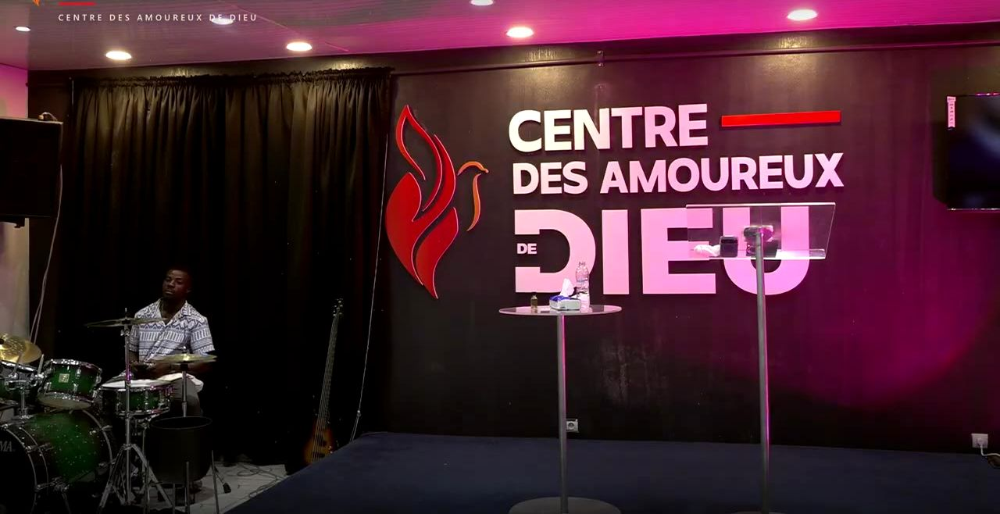
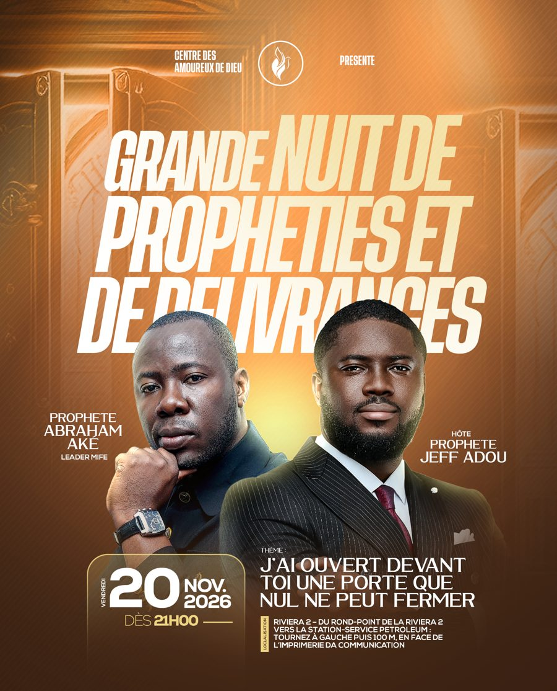

Du lundi 9 au dimanche 22 novembre 2026
14 jours de jeûnes et prières
« Expérimenter la gloire de Dieu »
Prière du matin de 5h00 à 5h30 sur WhatsApp, prière du soir dès 20h45 sur Google Meet, et les mercredis 11 et 18 à l'église.
M'inscrire au jeûne
Église à Cocody Riviera 2, Abidjan
Une famille spirituelle où la Parole est enseignée avec clarté, où la prière est une respiration, et où chacun est accueilli avec dignité.
Culte chaque dimanche, de 14h00 à 18h30
Cocody Riviera 2, en face de l'imprimerie DA Communication · Itinéraire
Notre thème de novembre : remporter les batailles par la prière.
Du lundi 9 au dimanche 22 novembre 2026
« Expérimenter la gloire de Dieu »
Prière du matin de 5h00 à 5h30 sur WhatsApp, prière du soir dès 20h45 sur Google Meet, et les mercredis 11 et 18 à l'église.
M'inscrire au jeûne
Vendredi 20 novembre 2026, dès 21h00
« J'ai ouvert devant toi une porte que nul ne peut fermer »
Avec le Prophète Abraham Aké, leader du MIFE, et le Prophète Jeff Adou. Au Centre, à Cocody Riviera 2.
Voir l'itinéraireUne prophétie que tu reçois est une invitation à la prière.
Prophète Daniel Jeff Adou
Fondateur et pasteur du Centre des Amoureux de Dieu depuis octobre 2023. Son enseignement insiste sur l'amour de Dieu, la vie de prière et le combat spirituel ; il est l'auteur de Sortir des prisons familiales.
Découvrir son ministère« Amoureux de Dieu » n'est pas un titre que l'on se donne : c'est une direction de vie. Notre vision : former des ouvriers, bâtir une armée d'amoureux passionnés pour Dieu et les équiper pour impacter la société.
Notre vision et nos valeursSanté, famille, travail, mariage, finances : écrivez-nous. L'équipe pastorale prie pour chaque demande, en toute confidentialité.
Demander une prièreGuérison, délivrance, restauration : votre témoignage peut fortifier la foi d'un autre. Racontez-nous ce que vous avez vécu.
Partager un témoignageQue ce soit votre première fois ou que vous cherchiez une maison spirituelle, il y a une place pour vous dimanche.
Cocody Riviera 2, en face de l'imprimerie DA Communication